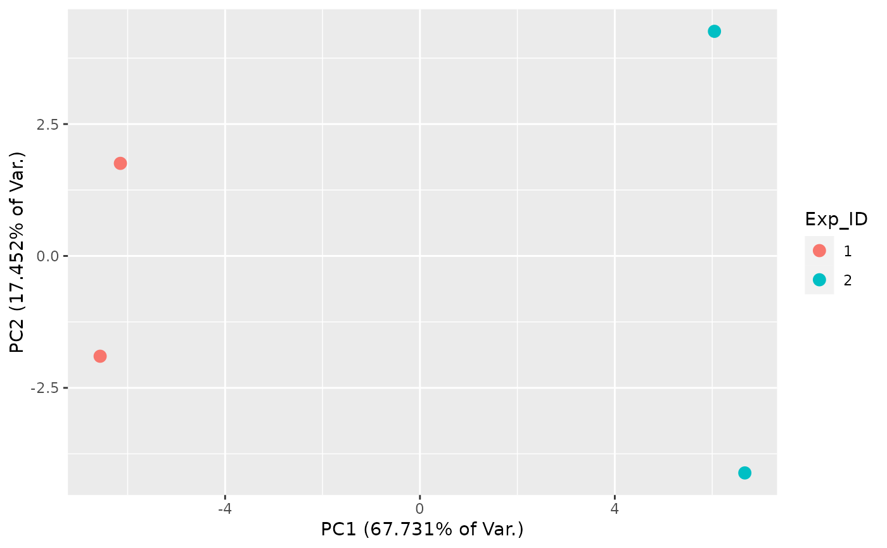
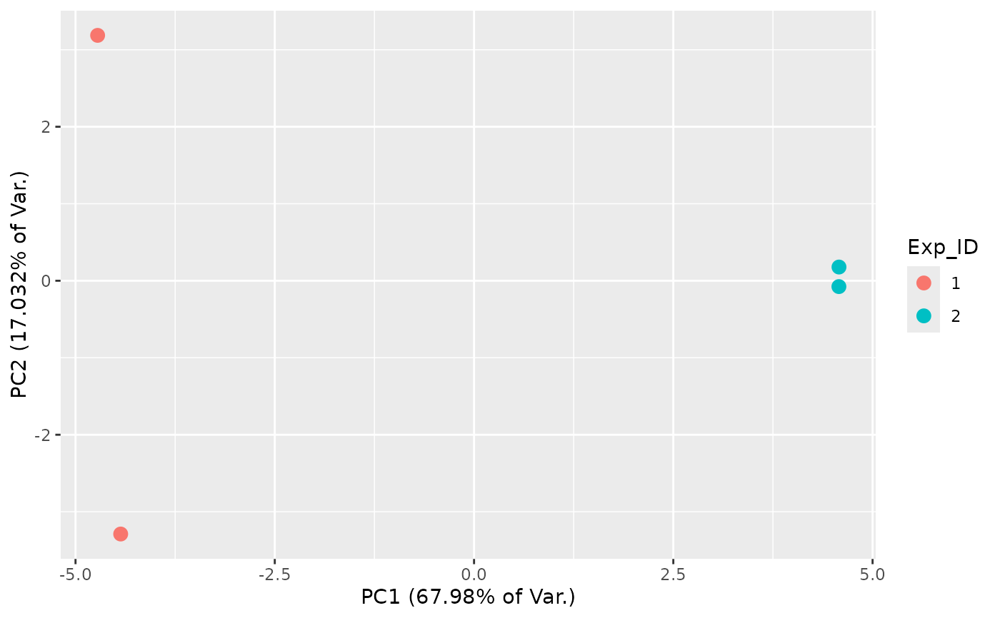

This function creates a 2-component PCA plot using logit(fn) or log(kdeg) estimates.
Usage
FnPCA2(obj, Model = c("MLE", "Hybrid", "MCMC"), log_kdeg = FALSE)Examples
# \donttest{
# Simulate data for 500 genes and 2 replicates
sim <- Simulate_bakRData(500, nreps = 2)
# Fit data with fast implementation
Fit <- bakRFit(sim$bakRData)
#> Finding reliable Features
#> Filtering out unwanted or unreliable features
#> Processing data...
#> Estimating pnew with likelihood maximization
#> Estimating unlabeled mutation rate with -s4U data
#> Estimated pnews and polds for each sample are:
#> # A tibble: 4 × 4
#> # Groups: mut [2]
#> mut reps pnew pold
#> <int> <dbl> <dbl> <dbl>
#> 1 1 1 0.0499 0.00100
#> 2 1 2 0.0502 0.00100
#> 3 2 1 0.0501 0.00100
#> 4 2 2 0.0501 0.00100
#> Estimating fraction labeled
#> Estimating per replicate uncertainties
#> Estimating read count-variance relationship
#> Averaging replicate data and regularizing estimates
#> Assessing statistical significance
#> All done! Run QC_checks() on your bakRFit object to assess the
#> quality of your data and get recommendations for next steps.
# Fn PCA
FnPCA2(Fit, Model = "MLE")

# log(kdeg) PCA
FnPCA2(Fit, Model = "MLE", log_kdeg = TRUE)

# }